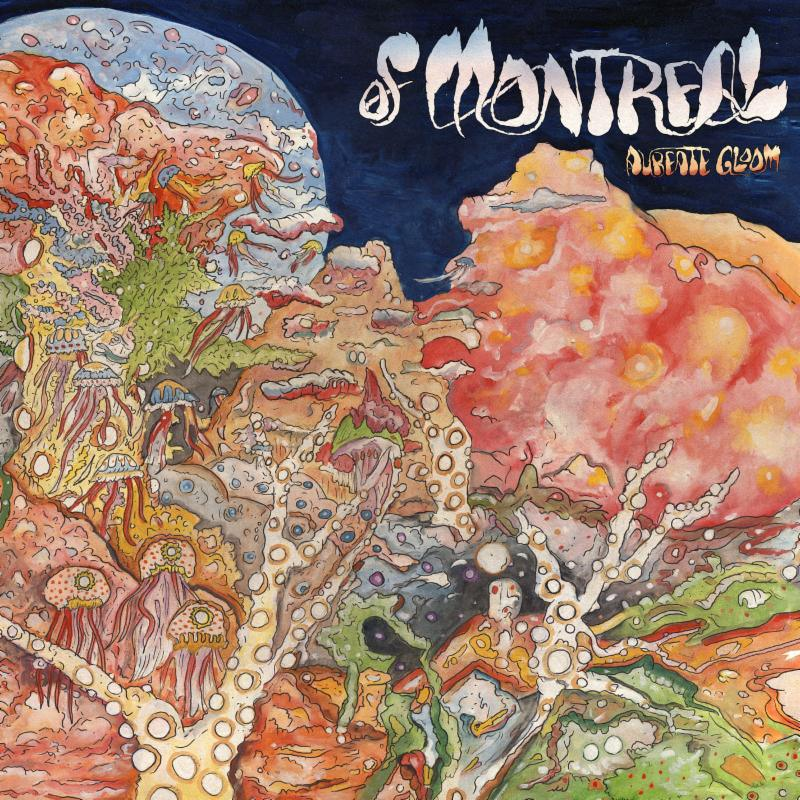

Aureate Gloom (2015)
In his 13th album, Kevin Barnes gives new life to the name of Montreal. After a couple albums received poor reviews, Aureate Gloom gave of Montreal a resurgence, being compared to Hissing Fauna in terms of gripping, emotional lyrics paired with funky, upbeat melodies. The album is a bit disjointed and lacks a central focus; one can get lost among the dynamic of the sounds.
Track Listing
- Bassem Sabry - 4:45
- Last Rites at the Jane Hotel - 5:02
- Empyrean Abattoir - 4:32
- Aluminum Crown - 3:34
- Virgilian Lots - 3:21
- Monolithic Egress - 5:23
- Apollyon of Blue Room - 3:56
- Estocadas - 4:20
- Chthonian Dirge for Uruk the Other - 2:48
- Like Ashoka's Inferno of Memory - 5:49
Featured Track
Bassem Sabry
This song was the single of Aureate Gloom, released prior to the album as a whole. Barnes speaks about losing a hero or person to look up to, leading to his distrust in any type of leader or figure of authority.
Lyrics
Look at our electric guitars
And, if not for the good people weeping
All we'd hear is sounds of our horses dying
But I'm not 'bout to start crying about it
It must be fairly normal
To devolve into cycloptic brooding
As the genocidal massacres you rubbed
Over some perceived sedition
Insecurities of men messing everything up again
I'll never follow no kind of master's voice
The mutinous tramp of cold voltage crucifixion is my conduit
I just watched my hero fail
Now I'm in a dark and violent funk
Every leader is a cellophane punk
If you hear me say "yeah!" (Yeah!)
"Yeah!" (Yeah!) "Yeah!" (Yeah!) "Yeah!" (Yeah!)
There must be a softer vision that you could kick to
In this aureate gloom, I assume
Both sides are embarrassingly backwards in their thinking
Bearing no one to side with, none I want to defend
People disappear on the wrong side of this revolution
When they resurface, there's a black hole in their skull
People disappear on the wrong side of this revolution
When they'll return, all their childhood memories are dead
I'll never follow no kind of master's voice
The mutinous tramp of cold vulture crucifixion is my conduit
I just watched my hero fail
Now I'm in a dark and violent funk
Every leader is a cellophane punk
If you hear me say "yeah!" (Yeah!)
"Yeah!" (Yeah!) "Yeah!" (Yeah!) "Yeah!" (Yeah!)
I'll never follow no kind of master's voice
The mutinous tramp of cold voltage crucifixion is my conduit
I just watched my hero fail
Now I'm in a dark and violent funk
Every leader is a cellophane punk
If you hear me say "yeah!" (Yeah!)
"Yeah!" (Yeah!) "Yeah!" (Yeah!) "Yeah!" (Yeah!)
Yeah!
I believe in witches
I believe in you
I believe in witches
I believe in you, you, you, you, you, you, you, you
I believe in witches
I believe in you
I believe in witches
I believe in you, you, you, you, you, you, you, you, you